Otra vez armando
el informe a
mano.
Inspecciones, flota, conductores, kilómetros… y fin de año encima.
Estás invitado · Conversatorio virtual
EN VIVO
con el Dr. Yezid Ricaurte y FEGIR
Lo que vas a ver
01Auditorías de inspección preoperacional
02Kilometraje, flota y conductores
03Tus indicadores de siniestralidad
04Tu informe, con un solo clic
Invitación
3 DE OCTUBRE
Sábado · 10:00 a. m. (Col)
Confirma tu asistencia
yezidricaurte.com
Gratuito · cupos limitados · recordatorio por WhatsApp

¡Tu seguridad, nuestra prioridad!